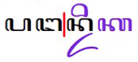

This document describes requirements for the layout and presentation of text in languages that use the Javanese script when they are used by Web standards and technologies, such as HTML, CSS, Mobile Web, Digital Publications, and Unicode.
This document describes the basic requirements for Javanese script layout and text support on the Web and in eBooks. These requirements provide information for Web technologies such as CSS, HTML and digital publications about how to support users of the Javanese script. Currently the document focuses on Javanese as used for the Javanese language. The information here is developed in conjunction with a document that summarises gaps in support on the Web for Javanese script.
This document is pointed to by a separate document, Javanese Gap Analysis, which describes gaps in support for Javanese on the Web, and prioritises and describes the impact of those gaps on the user.
Wherever an unsupported feature is indentified through the gap analysis process, the requirements for that feature need to be documented. This document is where those requirements are described.
This document should contain no reference to a particular technology. For example, it should not say "CSS does/doesn't do such and such", and it should not describe how a technology, such as CSS, should implement the requirements. It is technology agnostic, so that it will be evergreen, and it simply describes how the script works. The gap analysis document is the appropriate place for all kinds of technology-specific information.
Other related resources
The document International text layout and typography index (known informally as the text layout index) points to this document and others, and provides a central location for developers and implementers to find information related to various scripts.
The W3C also maintains a tracking system that has links to github issues in W3C repositories. There are separate links for (a) requests from developers to the user community for information about how scripts/languages work, (b) issues raised against a spec, and (c) browser bugs. For example, you can find out what information developers are currently seeking, and the resulting list can also be filtered by script.
Javanese Script Overview
Javanese is an abugida, ie. consonants carry an inherent vowel sound that is overridden, where needed, using vowel signs. In Javanese, consonants carry an inherent vowel, which can be a or o.
An orthographic syllable in Javanese can be described as {C F} C {{R}Y} {V{A}} {Z}, where:
C is a consonant (or consonant + ◌꦳U+A9B3 JAVANESE SIGN CECAK TELU),
F is ◌꧀U+A9C0 JAVANESE PANGKON,
R is◌ꦿU+A9BF JAVANESE CONSONANT SIGN CAKRA,
Y is ◌ꦾU+A9BE JAVANESE CONSONANT SIGN PENGKAL,
V is a vowel-sign,
A is ◌ꦴU+A9B4 JAVANESE VOWEL SIGN TARUNG, and
Z is one of the syllable-final consonants.
The initial consonant cluster may represent a word-initial cluster such as mb, nd, ndh, nj or nng,c eg. ꦩꦧꦸꦫꦸmburuhunting, or it may represent the final consonant of a preceding syllable and the initial consonant of another, eg. ꦲꦏ꧀ꦱꦫhk͓sr (aksara)characters.
Root words are typically disyllables of the form Cˡ V Cˡ V Cˡ, where Cˡ represents an optional consonant or consonant cluster, and V represents a vowel. Most commonly, this represents CVCVC, followed by CVCCVC.c
Text direction
Javanese is written horizontally, left to right.
Structural boundaries & markers
Word boundaries
The concept of 'word' is difficult to define in any language (see What is a word?). We will treat it as a vaguely-defined but recognisable semantic unit that is typically smaller than a phrase and may comprise one or more syllables.
Spaces are used in Javanese as phrase separators, but Javanese doesn't separate words in a phrase using visible spaces.
Quotations
Javanese text may use ꧊U+A9CA JAVANESE PADA ADEG for quotation marks.
Alternatively, the pair of characters ꧌U+A9CC JAVANESE PADA PISELEH and ꧍U+A9CD JAVANESE TURNED PADA PISELEH may be used.
Text boundaries & selection
TBD
Line & paragraph layout
Line breaking
Like Tibetan, line breaking can occur after any full orthographic syllable. Hyphenation is not used.→g
Javanese stacks consonants when they occur without intervening vowels, and this stacking occurs across word and syllable boundaries. When breaking a line, these stacks are not split. Similarly, some consonant clusters are rendered with conjoined glyphs, which should also not be broken. This means that line-breaking is done at the boundaries of 'orthographic syllables', rather than phonetic ones.
The example in the figure below shows the Javanese words pangan and dika. The final n in pangan and the initial di in dika form a stack. The line break opportunity appears just before the stack, which means that the final n in pangan will be wrapped to the next line with the word dika.

Line break opportunity between the words pangan and dika (red line) splits the final consonant from pangan.
In some printed material, when a new line begins with ꦺU+A9BA JAVANESE VOWEL SIGN TALING, an additional spacing glyph of the same character is placed at the end of the previous line.
An extra taling at the end of the line when the word kawon is split before won.
Acknowledgements
Special thanks to the following people who contributed to this document (contributors' names listed in in alphabetic order).